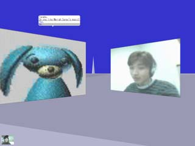
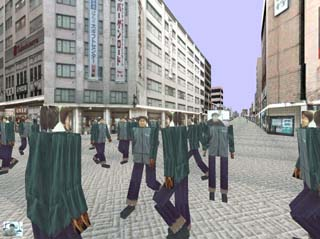
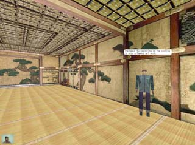
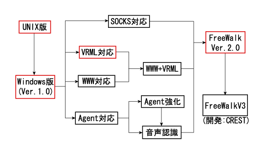

<!DOCTYPE HTML PUBLIC "-//W3C//DTD HTML 4.01 Transitional//EN">
<html lang="ja">
<head>
<meta http-equiv="Content-Type" content="text/html; charset=iso-2022-jp">
<meta http-equiv="Content-Style-Type" content="text/css">
<title>FreeWalk $B3+H/MQ%Z!<%8(B</title>
<style type="text/css"><!--
H1{
font-size: 3em;
  font-weight: bold;
  text-align: left;
  margin-top: 0px;
  color:green;
}
H2{
  font-size: 1.5em;
  font-weight: bold;
  text-align: left;
  margin-top: 0px;
  color:blue;
}
--></style>
</head>
<body>

<h1>FreeWalk $B3+H/MQ%Z!<%8(B</h1>

<hr>

<p>



$B3+H/Cf$N2hLL(B
</p>

<hr>

<h2>$B8=%P!<%8%g%s(B (FreeWalkV3)</h2>

<ul>
<li><a href="server/">$B3+H/Cf$N6&M-%U%!%$%k(B</a>
	<UL>
	<LI><A HREF="server/Programs/">$B%=!<%9%3!<%I(B</A>
	<LI><A HREF="server/VRML/">VRML$B%G!<%?(B</A>
	<LI><A HREF="server/Movies/">$B%G%bMQ%S%G%*1GA|(B</A>
	<LI><A HREF="server/Documents/">$B;qNA(B</A>
	</UL>
<li><a href="coding-j.html">$B3+H/>u67(B</a> (2000.8.10$B8=:_(B)
<li><a href="tips-j.html">$B3+H/$N$?$a$N(BTips</a> (2000.8.15$B99?7(B)
<li><a href="documents/index-j.html">$B;qNA(B</a> (2000.9.26$B99?7(B)
</ul>

<h2>$B5l%P!<%8%g%s(B (FreeWalk Ver.2.?)</h2>

<ul>
<li><a href="./fwvr2.3/fwvrocx.html">FreeWalk Ver.2.3 $B$N5/F0(B</a>
    (IE $B$G5/F0$G$-$^$9!#(B<a href="howto-j.html#iesetup">$B@_Dj(B</a>$B$,I,MW$G$9!#(B)
    <br><br>
<li><a href="download-j.html">$B%@%&%s%m!<%I!&JQ99MzNr(B</a>
<li><a href="howto-j.html">$B<B9TJ}K!(B</a>
<li><a href="documents/index-ver2-j.html">$B;qNA(B</a>
</ul>

<h2>$B5~Bg$G3+H/$5$l$?2a5n$N%P!<%8%g%s(B</h2>

($B@VOHFb$r%/%j%C%/$9$k$H$=$l$>$l$N%Z!<%8$KHt$S$^$9(B)

<map name="tree">
<area href="http://www.lab7.kuis.kyoto-u.ac.jp/services/free-software/freewalk/freewalk.html" shape="rect" coords="38,41,104,68" alt="UNIX $BHG(B FreeWalk">
<area href="http://www.lab7.kuis.kyoto-u.ac.jp/~minoru/fw/" shape="rect" coords="31,153,113,202" alt="Windows $BHG(B FreeWalk Ver.1.0">
<area href="http://www.lab7.kuis.kyoto-u.ac.jp/~minoru/fw/fwvrml.html" shape="rect" coords="162,93,238,120" alt="FreeWalk VRML $BBP1~HG(B">
<area href="." shape="rect" coords="421,63,503,109" alt="FreeWalk Ver.2.x">
</map>


<hr>
<a href="../index-j.html">$BFbIt%Z!<%8$KLa$k(B</a>

</body>
</html>
